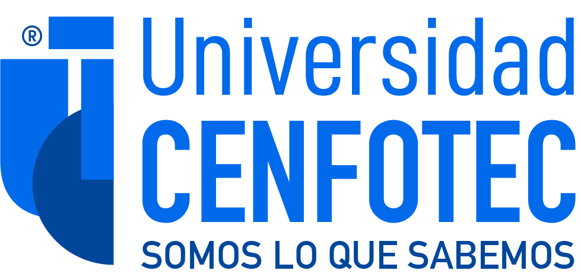

TI-311 · Introducción al Soporte Técnico IProyecto final
← Volver al curso
Proyecto final
Levantamiento de requisitos para una PC personalizada
En grupos, entrevistan a un cliente (el instructor), recogen sus necesidades y diseñan la computadora ideal para él, justificando cada componente.
Mismos equipos de los casos prácticos
Presentación de 10 min + preguntas
Valor: 55 %
Objetivo
Realizar un levantamiento de requisitos para una computadora personalizada y proponer la configuración ideal, justificada por compatibilidad de hardware, rendimiento, eficiencia energética y configuración de BIOS/UEFI.
Instrucciones
- Entrevista al cliente.Cada grupo entrevista al instructor (cliente) durante unos 10 minutos. Cubran: tipo de uso (gaming, oficina, edición, etc.), presupuesto, preferencias de rendimiento, espacio, ruido y cualquier otra necesidad.
- Diseño de la PC.Con los datos de la entrevista, especifiquen cada componente (CPU, placa madre, RAM, almacenamiento, tarjeta de video si aplica, fuente, refrigeración y gabinete) asegurando la compatibilidad entre todos.
- Configuración avanzada.Expliquen qué ajustes de BIOS/UEFI aplicarían (modo de arranque, perfil de memoria XMP/EXPO, Secure Boot/TPM, etc.) y, si corresponde, el manejo del CMOS para optimizar rendimiento y compatibilidad.
- Justificación.Justifiquen cada componente indicando cómo cumple con las necesidades del cliente: rendimiento, eficiencia energética y confiabilidad.
- Presentación final.Presenten la configuración al resto del grupo y defiendan por qué es la mejor opción para el cliente, con criterios técnicos.
Presentación
Se presenta en la última sesión del curso. Cada grupo tiene 10 minutos para presentar y responder preguntas.
Rúbrica (100 puntos = 55 % de la nota)
| Criterio | Ponderación | Descripción |
|---|
| Levantamiento de requisitos | 25 % | Recolectan información precisa y relevante del cliente. |
| Compatibilidad de hardware | 20 % | Los componentes seleccionados son compatibles entre sí. |
| Justificación de componentes | 25 % | Explican con claridad por qué eligieron cada componente según las necesidades del cliente. |
| Configuración avanzada (BIOS/UEFI) | 15 % | Incluyen la configuración de BIOS/UEFI para optimizar el rendimiento. |
| Presentación final | 15 % | Claridad y efectividad al presentar el caso completo y responder preguntas. |